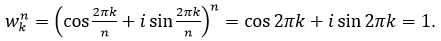
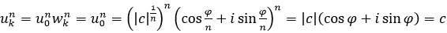

корень n - ой степени из единицы и произвольного комплексного числа
Пусть n - любое натуральное число, отличное от нуля.
Определение 1.7 Комплексное число ω, удовлетворяющее условию ωn = 1, называется корнем n -й степени из единицы.
Теорема 1.8 Существует точно n различных корней n - й степени из единицы и все они получаются по формуле
, при k = 0, 1 ,… , n-1 .
Доказательство. Каждое из чисел ωk есть корень n -й степени из единицы, так как согласно формуле Муавра 
Действительные числа неотрицательны, меньше числа 2π и попарно различны.
Следовательно, по теореме 1.5, комплексные числа ω0 , ω1 ,… ,ωn-1 попарно различны.
Нам остается показать, что произвольный корень n-й степени из единицы принадлежит множеству { ω0 , ω1, … ,ωn-1 }. По теореме 1.5, число ω можно представить в виде ω = |ω|(cosφ + isinφ), причем действительное число φ удовлетворяет условиям 0 ≤ φ <; 2π (1)
Так как ωn = 1, то |ω|n = 1 и , |ω| = 1.
Следовательно, ω = cosφ + isinφ. По формуле Муавра ωn = cosnφ + isinnφ. Поэтому равенство ωn = 1 можно записать в виде cosnφ+ isinnφ = cos0 + isin0. (2)
По теореме 1.6, из (2) следует, что nφ - 0 = 2πk для некоторого целого числа k, поэтому . Кроме того, в силу (1) и, значит, 0 ≤ k < n. Следовательно,
Следствие 1.2 Точки комплексной плоскости, изображающие корни n - й степени из единицы, являются вершинами правильного n - угольника, вписанного в окружность единичного радиуса с центром в начале координат, причем одна из вершин находится в точке (0,1).
Определение 1.8 Комплексное число ω называется первообразным корнем n - й степени из единицы (n≥1), если множество чисел { ω0 , ω1 ,… ,ωn-1} является множеством всех решений уравнения zn=1.
Так, например, при любом натуральном n ≥1 число в силу теоремы 1.8 является первообразным корнем n - й степени из единицы.
Корни n -й степени из произвольного комплексного числа
Тригонометрическая форма комплексного числа позволяет полностью решить вопрос об извлечении корней из комплексных чисел.
Теорема 1.9 Пусть c =|c|(cosφ + isinφ ) отличное от нуля комплексное число и n ненулевое натуральное число. Существует n различных корней n -й степени из числа c и все они получаются по формуле
Доказательство. Покажем, что uk = u0 ωk, k = 0, 1, … , n-1 (1), где ω0, …, ωn-1 корни n -й степени из единицы и .
В самом деле, в силу формулы Муавра
Каждое из чисел uk есть корень n -й степени из числа c, так как в силу (1) .
Если u - произвольный корень n -й степени из числа c, то (uu 0 -1) n = u n (u 0 n )-1 = cc-1 =1 . Поэтому uu0-1 ∈ { ω0 ,…, ωn-1 } и в силу (1) u ∈ { u0ω0 ,..., u0ωn-1 } = { u0 ,…, un-1 }.
Следовательно, множество { u0 ,…, un-1 } является множеством всех корней n -й степени из числа c. Это множество содержит в точности n различных элементов, поскольку {u0 ,…, un-1} ={ u0ω0 , ... , u0ωn-1 }, u0 ≠ 0 и числа ω0 ,… ,ωn-1 попарно различны (по теореме 1.5).